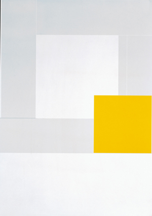

白の違いを探す。
ほとんど白く見えても、少し灰色がかった面があります。境目をたどると、いくつもの長方形が見えてきます。
人物紹介 · 実作品画像1点。ほかの代表作は所蔵元・公式解説へのリンクで紹介します。
人物 / グラフィックデザイナー
Hideki Nakajima
中島英樹は、雑誌や本、音楽のジャケットをつくった日本のデザイナーです。
文字を読むためだけでなく、形として見せることも大切にしました。
白の中にある色の違い、紙に開いた穴、文字の重なり。
ぱっと見たときと、よく見たときで、発見が変わるのが面白いところです。
実作品を見る · 2000年

画像を表示できませんでした。下の公式アーカイブで作品を確認できます。
中島英樹 / Graphic Wave 5 Exhibition / 2000年
ほとんど白く見えても、少し灰色がかった面があります。境目をたどると、いくつもの長方形が見えてきます。
明るい黄色の四角は、右側の中央より少し下にあります。淡い面と比べて、どこに最初に目が向くか確かめてみましょう。
© Hideki Nakajima. 出典：NAKAJIMA DESIGN公式アーカイブ。再利用自由の画像ではありません。
公式画像は300×425ピクセルです。細部を作り足さず、元の大きさまでで表示しています。
公式アーカイブで作品を見る ↗2000年のGraphic Wave展に関わる作品です。公式アーカイブにある2013年12月14日はWeb掲載日で、作品の制作年として扱いません。
CC0・パブリックドメインではありません。第三者への再利用許諾は示していません。
公式掲載の平面図形作品画像。独立した第三者写真の要素は見当たりませんが、複製方法・撮影者の独立確認はしていません。写真を含む他の作品は採用していません。
雑誌、ポスター、本。見る場所や手に取る方法が変わると、工夫も変わります。
淡い白と灰色の面に、黄色い四角が加わります。
色の境目をゆっくりたどってみましょう。
このページに画像を掲載しています。
公式の作品解説・記録を見る ↗中島英樹 / 2000 / 平面作品
掲載した平面作品の画像を観察する例です。色と形の関係だけで、作者のすべての仕事を説明するものではありません。
公式掲載の平面図形作品画像。独立した第三者写真の要素は見当たりませんが、複製方法・撮影者の独立確認はしていません。写真を含む他の作品は採用していません。
雑誌では、写真と文字を一緒に見せます。
何を大きく置き、何から読んでもらうかもデザインの仕事です。
画像は未掲載です。公式の解説ページで確かめられます。
公式の作品解説・記録を見る ↗中島英樹 / 1990–2018 / 雑誌
公式仕事リストの担当期間。特定号の画像は掲載していません。誌面の写真などの権利は別に確認します。
画像は未掲載。写真などの別権利を確認する必要があります。
香港の展覧会を知らせるポスターです。
刷り上がった紙に、手で穴を開けました。
同じ印刷物でも、一枚ずつ少し違うものになります。
画像は未掲載です。公式の解説ページで確かめられます。
公式の作品解説・記録を見る ↗中島英樹 / 2005 / 展覧会ポスター
制作年は2005年、TDC受賞年は2006年。作品中の薔薇写真の撮影者と権利範囲が未確認のため画像は掲載していません。
画像は未掲載。写真などの別権利を確認する必要があります。
表紙に四角い穴を開け、別の小冊子を収められる本です。
実際の本では、画面だけでは分からない紙の手ざわりも大切です。
画像は未掲載です。公式の解説ページで確かめられます。
公式の作品解説・記録を見る ↗中島英樹 / 2006 / 書籍
2006年の書籍・展覧会。2008年はTDC受賞年、アーカイブの2013年はWeb掲載日。書籍の物撮り写真は撮影者の条件が未確認なので未掲載です。
画像は未掲載。写真などの別権利を確認する必要があります。
坂本龍一（さかもと りゅういち）との共同制作による本です。
一人の作品としてまとめず、それぞれの仕事を分けて見ます。
画像は未掲載です。公式の解説ページで確かめられます。
公式の作品解説・記録を見る ↗中島英樹（S/Nは坂本龍一との共同制作） / 2002 / 共同制作の書籍
公式プロフィールの出版欄で確認。共同作者や収録内容の権利は別に扱い、画像は掲載していません。
画像は未掲載。写真などの別権利を確認する必要があります。
ピーター・サヴィルが手がけたレコードのジャケットとの出会いが、デザインの道に進むきっかけになりました。雑誌、本、音楽に関わる仕事で、文字の見せ方と紙の加工を試しています。ここでの「実験」は、いつもの読みやすさだけでなく、意外な形や紙の感触も試すことです。
《Unfinished #3-1》では、白や灰色の小さな差と、黄色い面の関係を見ます。これは掲載画像の観察で、全作品が同じ配色ではありません。
タイポグラフィとは、文字の形・大きさ・並べ方で伝える工夫です。中島の仕事では、読むための文字と、目で見る形の両方に注目します。
《SEVEN EXHIBITION》では紙に穴を開けました。書籍『CLEAR in the FOG』は、表紙の四角い穴に別の小冊子を収められます。写真だけで紙の触り心地まで分かったとはしません。
空いた所、文字の重なり、色の面の位置を見比べます。整った線を使う場合も、その人が特定の学校や運動に所属した証拠にはなりません。
ピーター・サヴィルからの進路への影響と、坂本龍一との共同制作は、別の関係です。スイス・スタイルやグリッドとの見た目の比較はできますが、直接の師弟関係や影響が確認できたとはしません。
雑誌や音楽の仕事と、展覧会で見せる作品が行き来しています。画面で見るときも、元は紙の大きさ、手ざわり、ページの重なりを使う作品があることを忘れないようにしましょう。
本人の公式記録、本人による制作解説、展覧会を開いた機関の記録をもとにしています。
この人物の実作品画像は1点です。3〜5点の画像セットはまだそろっていません。人物の仕事を紹介する項目で、歴史的な運動や様式として分類していません。